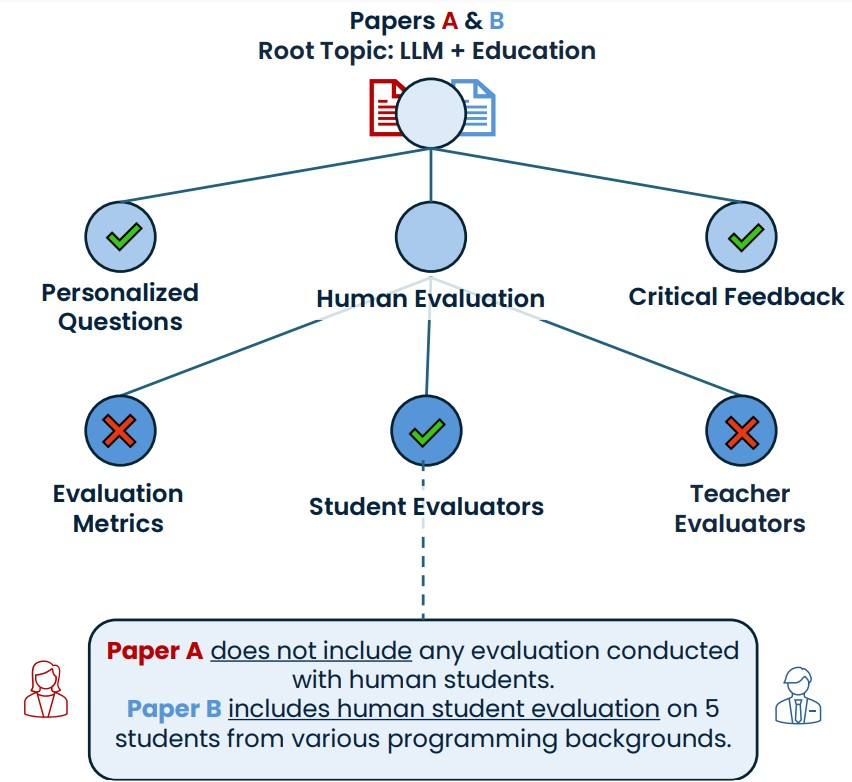
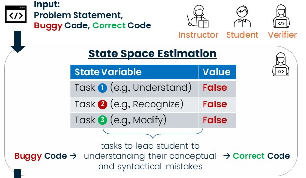
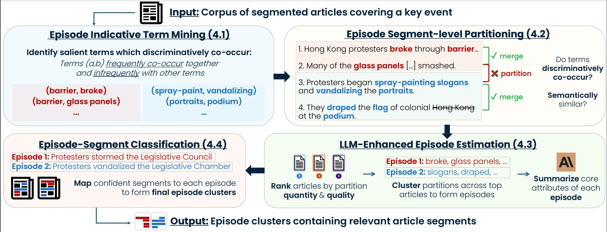
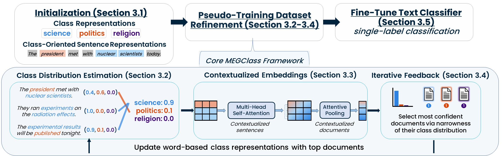
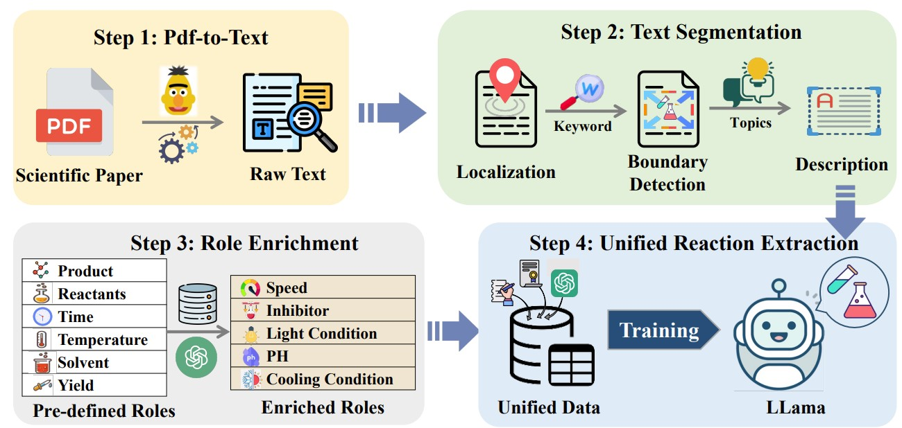

|
Hi, I'm Priyanka Kargupta! Let's make both models and humans think critically.
I am a third year PhD candidate working in natural language processing at University of Illinois at Urbana-Champaign, advised by Prof. Jiawei Han. I am supported by the NSF Graduate Research Fellowship. Prior to this, I was working on 3D scene representations with Prof. Ren Ng at the University of California, Berkeley, funded by the Intel SRC Fellowship.
My research aims to integrate structured knowledge and reasoning in order to make both models and their human users critically think.
My work explores this in both the educational (LLMs + Education) and scientific (AI for Research) domains. Specifically, how do we structure both the interactions between models and users (e.g., an Instructor model guiding a student through a problem), as well as the data critical to guiding such interactions (e.g., a student's knowledge state or external knowledge required to solve the problem)?
Email /
CV /
Scholar /
Twitter /
Github /
Linkedin
|
|
Research
I'm currently interested in exploring how we can model the dynamics between different agents and/or users in different settings in a structured manner (e.g., students and LLM-TAs; researcher-personas debating their works). I am also interested in devising new ways to mine and structure textual data, so that we can extract interesting insights from them (e.g., identifying a set of hierarchical topics commonly considered for developing a nuanced scientific perspective).
|
|

|
Tree-of-Debate: Multi-Persona Debate Trees Elicit Critical Thinking for Scientific Comparative Analysis
Priyanka Kargupta*,
Ishika Agarwal,
Shivam Agarwal
In Progress for Submission (ACL'25)
Paper
Determining significant novelties, incremental findings, and equivalent approaches between works is challenging, especially when the papers are not explicitly connected through citations. In order to elicit the critical reasoning required for comprehending the contribution degree of a paper, we propose converting the papers to LLM personas which debate one another. In other words, we propose a tree-of-debate (ToD), where we focus more on the personas' comparative reasoning induced by the debate, as opposed to its final outcome. ToD can dynamically construct a debate tree to reason about fine-grained arguments discussed in scholarly articles.
|
|

|
Instruct, Not Assist: LLM-based Multi-Turn Planning and Hierarchical Questioning for Socratic Code Debugging
Priyanka Kargupta*,
Ishika Agarwal*,
Dilek Hakkani-Tur,
Jiawei Han
EMNLP'24 Findings
Paper
/
Code
An Instructor agent guided by a novel state space-based planning algorithm. TreeInstruct asks probing questions to help students independently identify and resolve errors. It estimates a student's conceptual and syntactical knowledge to dynamically construct a question tree based on their responses and current knowledge state, effectively addressing both independent and dependent mistakes concurrently in a multi-turn interaction setting.
|
|

|
Synergizing Unsupervised Episode Detection with LLMs for Large-Scale News Events
Priyanka Kargupta,
Yunyi Zhang,
Yizhu Jiao,
Siru Ouyang,
Jiawei Han
arXiv, 2024
Paper
/
Code
Introduces a novel task, episode detection, which identifies episodes within a news corpus of key event articles. Detecting episodes poses unique challenges, as they lack explicit temporal or locational markers and cannot be merged using semantic similarity alone. While large language models (LLMs) can aid with these reasoning difficulties, they suffer with long contexts typical of news corpora. To address these challenges, we introduce EpiMine, an unsupervised framework that identifies a key event's candidate episodes by leveraging natural episodic partitions in articles, estimated through shifts in discriminative term combinations. These candidate episodes are more cohesive and representative of true episodes, synergizing with LLMs to better interpret and refine them into final episodes.
|
|

|
MEGClass: Extremely Weakly Supervised Text Classification via Mutually-Enhancing Text Granularities
Priyanka Kargupta,
Tanay Komarlu,
Susik Yoon,
Xuan Wang,
Jiawei Han
EMNLP'23 Findings
Paper
/
Code
An extremely weakly-supervised text classification method that leverages Mutually-Enhancing Text Granularities. MEGClass utilizes coarse- and fine-grained context signals obtained by jointly considering a document's most class-indicative words and sentences. This approach enables the learning of a contextualized document representation that captures the most discriminative class indicators.
|
|

|
Reaction miner: An integrated system for chemical reaction extraction from textual data
Ming Zhong, Siru Ouyang, Yizhu Jiao, Priyanka Kargupta, Leo Luo, Yanzhen Shen, Bobby Zhou, Xianrui Zhong, Xuan Liu, Hongxiang Li, Jinfeng Xiao, Minhao Jiang, Vivian Hu, Xuan Wang, Heng Ji, Martin Burke, Huimin Zhao, Jiawei Han
EMNLP'23 Demo, 2023
Paper
/
Code
A system which interacts with raw scientific literature, delivering precise and more informative chemical reactions. Going beyond mere extraction, Reaction Miner integrates a holistic workflow: it accepts PDF files as input, bypassing the need for pre-processing and bolstering user accessibility. Subsequently, a text segmentation module ensures that the refined text encapsulates complete chemical reactions, augmenting the accuracy of extraction. Moreover, Reaction Miner broadens the scope of existing pre-defined reaction roles, including vital attributes previously neglected, thereby offering a more comprehensive depiction of chemical reactions. Evaluations conducted by chemistry domain users highlight the efficacy of each module in our system, demonstrating Reaction Miner as a powerful tool in this field.
|
|
{kind=link}